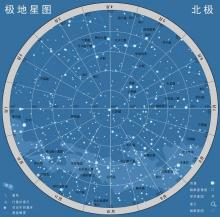
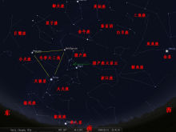
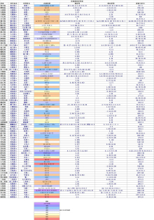
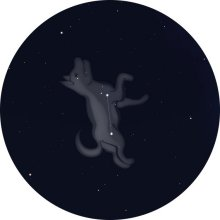

古代为了要方便在航海时辨别方位与观测天象，于是将散布在天上的星星运用想像力把它们连结起来，有一半是在古时候就已命名了，其命名的方式有依照古文明的神话与形状的附会﹙包含了美索不达米亚、巴比伦、埃及、希腊的神话与史诗﹚。另一半（大部是在南半球的夜空中）是近代才命名，经常用航海的仪器来命名。
1928年，国际天文学联合会为了统一繁杂的星座划分，用精确的边界把天空分为八十八个星座，使天空每一颗恒星都属于某一特定星座。
- 中文名
- 八十八星座
- 外文名
- 88 Constellation
- 分 类
- 天文学星座
- 作 用
- 辨别方位与观测天象
目录
八十八星座历史起源
编辑古代为了要方便在航海时辨别方位与观测天象，于是将散布在天上的星星运用想像力把它们连结起来，有一半是在古时候就已命名了，其命名的方式有依照古文明的神话与形状的附会﹙包含了美索不达米亚、巴比伦、埃及、希腊的神话与史诗﹚。另一半（大部是在南半球的夜空中）是近代才命名，经常用航海的仪器来命名。

八十八星座
在古代因地域的不同，所以看星空的方式也就不一样。如今全世界已经统一依据星座图将天空划分为八十八区域八十八个星座。我们一般谈论的“星座”（SIGN），指的是“太阳星座”（SUNSIGN）；即以地球上的人为中心，同时间看到太阳运行到轨道（希腊文ZODIAC：即动物绕成的圈圈，又称“黄道”）上哪一个星座的位置，就说那个人是什么星座。二千多年前希腊的天文学家希巴克斯（Hipparchus，西元前190～120年）为标示太阳在黄道上运行的位置，就将黄道带分成十二个区段，以春分点为0°，自春分点（即黄道零度）算起，每隔30°为一宫，并以当时各宫内所包含的主要星座来命名，依次为白羊、金牛、双子、巨蟹、狮子、室女、天秤、天蝎、人马、摩羯、宝瓶、双鱼等宫，称之为黄道十二宫，总计为十二个星群。在地球运转到每个等份（星群）时所出生的婴儿，长大后总有若干相似的特征，包括行为特质、性格特征等。将这些联想（丰富的想像和创造力）串联起来，便使这些星群人性的具像化了；又加入神话的色彩，成为文化（主要指希腊和罗马神话）的重要部分。

八十八星座部分
这套命理演进、流传至今至少五千年的历史，它们以这十二个星座为代表。但这些星座并非是某一个“星星”的意思，只能视为“名称相同的一种代表标记而已”。八十八星座星座介绍
编辑表格1
排名 | 汉语名 | 位置 | 面积(平方度) | 星数 | 观测季节 | 1,2,3,4等星数量 | α星 |
1 | 赤道 | 1302.844 | 20 | 春季 | 0,1,5,13 | ||
2 | 赤道 | 1294.428 | 95 | 春季 | 1,0,0,6 | ||
3 | 北天 | 1279.660 | 125 | 夏季 | 0,2,1,4 | 北斗一(天枢星) | |
4 | 赤道 | 1231.411 | 100 | 秋季 | 0,2,1,11 | ||
5 | 赤道 | 1225.148 | 140 | 夏季 | 0,0,6,19 | ||
6 | 赤道 | 1137.919 | 100 | 冬季 | 1,0,3,24 | ||
7 | 赤道 | 1120.794 | 100 | 秋季 | 0,1,4,9 | ||
8 | 北天 | 1082.952 | 80 | 夏季 | 0,1,5,9 | 紫微右垣一(右枢) | |
9 | 南天 | 1060.422 | 150 | 春季 | 2,2,8,21 | ||
10 | 赤道 | 979.854 | 90 | 秋季 | 0,0,2,13 | ||
11 | 赤道 | 948.340 | 100 | 夏季 | 0,1,7,15 | ||
12 | 赤道 | 946.964 | 70 | 春季 | 1,2,3,12 | ||
13 | 赤道 | 906.831 | 90 | 春季 | 1,0,3,10 | ||
14 | 赤道 | 889.417 | 75 | 秋季 | 0,0,0,7 | ||
15 | 赤道 | 867.432 | 115 | 夏季 | 0,2,8,10 | ||
16 | 北天 | 803.983 | 150 | 夏季 | 1,1,4,18 | ||
17 | 赤道 | 797.249 | 125 | 夏季 | 1,0,0,2 | ||
18 | 北天 | 756.828 | 50 | 冬季 | 0,0,0,4 | 紫微右垣六(少卫) | |
19 | 北天 | 722.278 | 100 | 秋季 | 0,3,1,11 | ||
20 | 赤道 | 673.434 | 140 | 冬季 | 0,1,7,13 | 无α星 | |
21 | 北天 | 657.438 | 90 | 冬季 | 1,1,4,4 | ||
22 | 赤道 | 652.473 | 70 | 夏季 | 1,0,4,6 | ||
23 | 赤道 | 636.928 | 60 | 夏季 | 0,0,0,12 | 天市右垣七（蜀） | |
24 | 北天 | 614.997 | 90 | 冬季 | 0,2,5,15 | ||
25 | 北天 | 598.407 | 90 | 秋季 | 0,3,2,5 | ||
26 | 赤道 | 594.120 | 120 | 冬季 | 2,5,3,15 | ||
27 | 北天 | 587.787 | 60 | 秋季 | 0,0,3,10 | ||
28 | 北天 | 545.386 | 60 | 冬季 | 0,0,1,5 | 轩辕四 | |
29 | 赤道 | 538.052 | 50 | 夏季 | 0,0,3,4 | ||
30 | 赤道 | 513.761 | 70 | 冬季 | 1,2,4,12 | ||
31 | 赤道 | 505.872 | 60 | 冬季 | 0,0,0,6 | ||
32 | 南天 | 499.649 | 110 | 春季 | 1,0,3,11 | 无α星 | |
33 | 赤道 | 496.783 | 100 | 夏季 | 1,3,10,10 | ||
34 | 南天 | 494.184 | 110 | 冬季 | 1,3,3,18 | ||
35 | 南天 | 481.569 | 85 | 冬季 | 0,0,3,6 | 阙丘增七 | |
36 | 赤道 | 474.764 | 30 | 秋季 | 0,0,0,3 | 近土司空南 | |
37 | 南天 | 469.319 | 40 | 秋季 | 0,1,2,5 | ||
38 | 北天 | 465.194 | 30 | 春季 | 0,0,1,1 | ||
39 | 赤道 | 441.395 | 50 | 秋季 | 0,0,1,2 | ||
40 | 赤道 | 413.947 | 50 | 秋季 | 0,0,2,7 | ||
41 | 赤道 | 397.502 | 35 | 秋季 | 0,0,0,1 | ||
42 | 赤道 | 386.475 | 53 | 春季 | 0,0,0,2 | ||
43 | 赤道 | 380.118 | 80 | 冬季 | 1,4,2,11 | ||
44 | 南天 | 377.666 | 45 | 夏季 | 0,1,0,10 | ||
45 | 南天 | 365.513 | 30 | 秋季 | 0,2,1,6 | ||
46 | 南天 | 333.683 | 70 | 夏季 | 0,0,4,16 | ||
47 | 赤道 | 313.515 | 25 | 冬季 | 1,1,2,23 | 天相二 | |
48 | 南天 | 294.557 | 25 | 春季 | 0,5,7,8 | 鸟喙一 | |
49 | 南天 | 294.006 | 20 | 秋季 | 0,0,1,2 | 波斯二 | |
50 | 南天 | 291.045 | 35 | 无 | 0,0,0,3 | ||
51 | 赤道 | 290.291 | 40 | 冬季 | 0,0,4,6 | ||
52 | 北天 | 286.476 | 45 | 夏季 | 1,0,2,6 | ||
53 | 赤道 | 282.398 | 20 | 春季 | 0,0,0,3 | ||
54 | 南天 | 270.184 | 40 | 冬季 | 0,0,2,4 | ||
55 | 赤道 | 268.165 | 45 | 夏季 | 0,0,0,0 | ||
56 | 北天 | 255.864 | 20 | 春季 | 0,3,2,14 | ||
57 | 南天 | 251.512 | 30 | 秋季 | 0,0,1,2 | 鳖一 | |
58 | 南天 | 248.885 | 20 | 冬季 | 0,0,0,5 | 天园增六 | |
59 | 南天 | 246.739 | 30 | 冬季 | 0,0,3,2 | ||
60 | 赤道 | 245.375 | 25 | 秋季 | 1,0,0,5 | ||
61 | 南天 | 243.035 | 20 | 秋季 | 0,0,3,2 | 蛇首一 | |
62 | 南天 | 238.901 | 20 | 春季 | 0,0,0,1 | 近天纪增二 | |
63 | 南天 | 237.057 | 30 | 夏季 | 0,0,3,5 | ||
64 | 赤道 | 231.956 | 20 | 春季 | 0,0,0,3 | 无α星 | |
65 | 赤道 | 220.833 | 25 | 春季 | 0,0,0,3 | 天狗五 | |
66 | 南天 | 209.513 | 20 | 秋季 | 0,0,0,0 | 璃瑜一 | |
67 | 南天 | 206.327 | 20 | 无 | 0,0,0,3 | 异雀八 | |
68 | 北天 | 200.688 | 35 | 秋季 | 0,0,0,2 | 螣蛇一 | |
69 | 赤道 | 188.549 | 30 | 夏季 | 0,0,0,4 | ||
70 | 赤道 | 183.801 | 15 | 春季 | 0,0,4,2 | ||
71 | 赤道 | 183.367 | 20 | 冬季 | 1,0,1,0 | ||
72 | 南天 | 179.173 | 20 | 冬季 | 0,0,1,2 | 金鱼二 | |
73 | 赤道 | 178.710 | 20 | 夏季 | 0,1,0,4 | ||
74 | 南天 | 165.290 | 20 | 夏季 | 0,0,0,1 | 无α星 | |
75 | 南天 | 153.484 | 15 | 无 | 0,0,0,0 | 近附白一 | |
76 | 南天 | 141.354 | 20 | 夏季 | 0,0,0,0 | 飞鱼一 | |
77 | 南天 | 138.355 | 30 | 无 | 0,0,2,4 | ||
78 | 赤道 | 131.847 | 15 | 夏季 | 0,1,1,2 | ||
79 | 南天 | 131.592 | 20 | 无 | 0,0,0,4 | 小斗增一 | |
80 | 南天 | 127.696 | 25 | 夏季 | 0,0,0,4 | ||
81 | 南天 | 124.865 | 10 | 冬季 | 0,0,0,0 | 近天园增六 | |
82 | 南天 | 113.936 | 15 | 冬季 | 0,0,1,4 | 夹白二 | |
83 | 南天 | 109.978 | 20 | 秋季 | 0,0,1,3 | ||
84 | 赤道 | 109.114 | 20 | 夏季 | 0,0,0,2 | 天弁一 | |
85 | 南天 | 93.353 | 20 | 春季 | 0,0,1,1 | ||
86 | 赤道 | 79.932 | 20 | 夏季 | 0,0,0,4 | ||
87 | 赤道 | 71.641 | 10 | 秋季 | 0,0,0,1 | ||
88 | 南天 | 68.447 | 30 | 春季 | 1,2,1,3 |
表格2
排名 | 名称 | 最亮星 | 最亮星视星等 | 通用名 | 所有格（天文学） | 缩写 | 最佳观测月份 | 完全可见区域 |
1 | 星宿一（α） | 2.0等 | Hydra | Hydrae | Hya | 2—6 | 54°N-83°S | |
2 | 角宿一（α） | 1.0等 | Virgo | Virginis | Vir | 4—6 | 67°N-75°S | |
3 | 玉衡（ε） | 1.8等 | Ursa Major | Ursae Majoris | Uma | 2—5 | 90°N-16°S | |
4 | 土司空（β） | 2.0等 | Cetus | Ceti | Cet | 10—12 | 65°N-79°S | |
5 | 天市右垣一（β） | 2.8等 | Hercules | Herculeis | Her | 6—7 | 90°N-38°S | |
6 | 水委一（α） | 0.5等 | Eridanus | Eridani | Eri | 11—1 | 32°N-89°S | |
7 | 危宿三（ε） | 2.4等 | Pegasus | Pegasi | Peg | 9—10 | 90°N-53°S | |
8 | 天棓四（γ） | 2.2等 | Draco | Draconis | Dra | 4—8 | 90°N-4°S | |
9 | 南门二（α） | -0.3等 | Centaurus | Centauri | Cen | 4—6 | 25°N-90°S | |
10 | 虚宿一（β） | 2.9等 | Aquarius | Aquarii | Aqr | 6—7 | 65°N-86°S | |
11 | 侯（α） | 2.1等 | Ophiuchus | Ophiuchi | Oph | 6—7 | 59°N-75°S | |
12 | 轩辕十四（α） | 1.4等 | Leo/Lion | Leonis | Leo | 3—4 | 82°N-57°S | |
13 | 大角星（α） | -0.1等 | Bootes | Bootis | Boo | 5—6 | 90°N-35°S | |
14 | 右更二（η） | 3.6等 | Pisces | Piscium | Psc | 10—11 | 83°N-56°S | |
15 | 箕宿三（ε） | 1.8等 | Sagittarius | Sagittarii | Sgr | 7—8 | 44°N-90°S | |
16 | 天津四（α） | 1.2等 | Cygnus | Cygni | Cyg | 8—9 | 90°N-28°S | |
17 | 毕宿五（α） | 0.85等 | Taurus | Tauri | Tau | 12—1 | 88°N-58°S | |
18 | 八谷增十四（β） | 4.0等 | Camelopardus | Camelopardalis | Cam | 12—5 | 90°N-3°S | |
19 | 壁宿二（α） | 2.1等 | Andromeda | Andromedae | And | 10—11 | 90°N-37°S | |
20 | 弧矢增二十二（ζ） | 2.2等 | Puppis/Stern | Puppis | Pup | 1—2 | 39°N-90°S | |
21 | 五车二（α） | 0.1等 | Auriga | Aurigae | Aur | 12—2 | 90°N-34°S | |
22 | 牛郎星（α） | 0.8等 | Aquila | Aquilae | Aql | 7—8 | 78°N-71°S | |
23 | 天市右垣七（α） | 2.6等 | Serpens | Serpentis | Ser | 6—8 | 74°N-64°S | |
24 | 天船三（α） | 1.8等 | Perseus | Perseus | Per | 10—12 | 90°N-31°S | |
25 | 王良四（α） | 2.2等 | Cassiopeia | Cassiopeiae | Cas | 10—12 | 90°N-12°S | |
26 | 参宿七（β） | 0.2等 | Orion | Orionis | Ori | 12—1 | 79°N-67°S | |
27 | 天钩五（α） | 2.5等 | Cepheus | Cephei | Cep | 9—10 | 90°N-1°S | |
28 | 轩辕四（α） | 3.1等 | Lynx | Lyncis | Lyn | 2—3 | 90°N-28°S | |
29 | 氐宿四（β） | 2.6等 | Libra | Librae | Lib | 5—9 | 60°N-90°S | |
30 | 北河三（β） | 1.2等 | Gemini | Geminorum | Gem | 1—2 | 90°N-55°S | |
31 | 柳宿增十（β） | 3.5等 | Cancer | Cancri | Cnc | 2—3 | 90°N-57°S | |
32 | 天社一（γ） | 1.8等 | Vela | Velorum | Vel | 2—4 | 32°N-90°S | |
33 | 心宿二（α）【变星】 | 1.0等 | Scorpius | Scorpii | Sco | 6—7 | 44°N-90°S | |
34 | 老人星（α） | -0.6等 | Carina | Carinae | Car | 1—4 | 14°N-90°S | |
35 | 3.7等 | Monoceros | Monocerotis | Mon | 1—2 | 78°N-87°S | ||
36 | 4.3等 | Sculptor | Sculptoris | Sct | 10—11 | 50°N-90°S | ||
37 | 火鸟六（α） | 2.4等 | Phoenix | Phoenicis | Phs | 10—11 | 32°N-90°S | |
38 | 常陈一（α） | 2.9等 | Canes Venatici | Canum Venaticorum | Cvn | 4—5 | 90°N-37°S | |
39 | 娄宿一（β） | 2.0等 | Aeies | Arietis | Ari | 10—12 | 90°N-58°S | |
40 | 垒壁阵四（δ） | 2.9等 | Capricornus | Capricorni | Cap | 8—9 | 62°N-90°S | |
41 | 天苑增三（α） | 3.9等 | Fornax | Fornacis | For | 10—12 | 50°N-90°S | |
42 | 周鼎一（β） | 4.3等 | Coma Berenices | Comae Berenices | Com | 4—5 | 90°N-56°S | |
43 | 天狼星（α） | -1.4等 | Cabus Major | Canis Majoris | Cma | 1—2 | 56°N-90°S | |
44 | 孔雀十一（α） | 1.9等 | Pavo | Pavonis | Pav | 7—9 | 15°N-90°S | |
45 | 鹤一（α） | 1.7等 | Grus | Gruis | Gru | 9—10 | 33°N-90°S | |
46 | 骑官十（α） | 2.3等 | Lupus | Lupi | Lup | 5—6 | 34°N-90°S | |
47 | 天相二（α） | 4.5等 | Sextans | Sextantis | Sex | 3—4 | 78°N-83°S | |
48 | 鸟喙一（α） | 2.9等 | Tucana | Tucanae | Tuc | 9—10 | 14°N-90°S | |
49 | 波斯二（α） | 3.1等 | Indus | Indi | Ind | 8—10 | 15°N-90°S | |
50 | 蛇尾三（ν） | 3.8等 | Octans | Octantis | Oct | 10月 | 0°N-90°S | |
51 | 厕一（α） | 2.6等 | Lepus | Leporis | Lep | 1月 | 62°N-90°S | |
52 | 织女星（α） | 0.0等 | Lyra | Lyrae | Lyr | 7—8 | 90°N-42°S | |
53 | 翼宿七（δ） | 3.6等 | Crater | Crateris | Crt | 4月 | 65°N-90°S | |
54 | 丈人一（α） | 2.7等 | Columba | Columbae | Col | 1月 | 46°N-90°S | |
55 | 齐增五（α） | 4.4等 | Vulpecula | Vulpeculae | Vul | 8—9 | 90°N-61°S | |
56 | 北极星（α） | 2.0等 | Ursa Minor | Ursae Minoris | Umi | 5—7 | 90°N-0°S | |
57 | 鳖一（α） | 3.5等 | Telescopium | Telescopii | Tel | 7—8 | 33°N-90°S | |
58 | 天园增六（α） | 3.9等 | Horologium | Horologii | Hor | 11—12 | 23°N-90°S | |
59 | 金鱼增一（α） | 3.2等 | Pictor | Pictoris | Pic | 12—1 | 26°N-90°S | |
60 | 北落师门（α） | 1.2等 | Piscis Austrinus | Piscis Austrini | Psa | 9—10 | 53°N-90°S | |
61 | 蛇尾一（β） | 2.8等 | Hydrus | Hydri | Hyi | 10—12 | 8°N-90°S | |
62 | 近天记增二（α） | 4.3等 | Antlia | Antliae | Aut | 3—4 | 49°N-90°S | |
63 | 杵三（β） | 2.8等 | Ara | Arae | Ara | 6—7 | 22°N-90°S | |
64 | 势四（46） | 3.8等 | Leo Minor | Leonis Minoris | Lmi | 3—4 | 90°N-48°S | |
65 | 天狗五（α） | 3.7等 | Pyxis | Pyxidis | Pyx | 2—3 | 52°N-90°S | |
66 | 璃瑜增一（γ） | 4.67等 | Microscopium | Microseopii | Mic | 8—9 | 45°N-90°S | |
67 | 异雀八（α） | 3.8等 | Apus | Apodis | Aps | 5—7 | 7°N-90°S | |
68 | 螣蛇一（α） | 3.8等 | Lacerta | Lacertae | Lac | 9—10 | 90°N-33°S | |
69 | 瓠瓜四（β） | 3.6等 | Delphinus | Detphini | Dec | 8—9 | 90°N-69°S | |
70 | 轸宿一（γ） | 2.6等 | Corvus | Corvi | Crv | 4—5 | 65°N-90°S | |
71 | 南河三（α） | 0.4等 | Canis Minor | Canis Minoris | Cmi | 2月 | 80°N-77°S | |
72 | 金鱼二（α） | 3.3等 | Dorado | Doradus | Dor | 12—1 | 20°N-90°S | |
73 | 贯索四（α） | 2.2等 | Corona Borealis | Coronae Borealis | CrB | 6月 | 90°N-50°S | |
74 | 4.0等 | Norma | Normae | Nor | 6月 | 29°N-90°S | ||
75 | 5.1等 | Mensa | Mensae | Mer | 12—2 | 5°N-90°S | ||
76 | 飞鱼三（β） | 3.8等 | Volans | Volantis | Vol | 1—3 | 14°N-90°S | |
77 | 蜜蜂三（α） | 2.7等 | Musca | Muscae | Mus | 4—5 | 14°N-90°S | |
78 | 天大将军九（β） | 3.0等 | Triangulum | Trianguli | Tri | 10—12 | 90°N-52°S | |
79 | 小斗九（α） | 4.1等 | Chamaeleon | Chamaeleontis | Cha | 2—5 | 7°N-90°S | |
80 | 鳖六（α） | 4.1等 | Corona Australis | Coronae Australis | CrA | 7—8 | 44°N-90°S | |
81 | 4.4等 | Caelum | Caeli | Cae | 12—1 | 41°N-90°S | ||
82 | 夹白二（α） | 3.3等 | Reticulum | Reticuli | Ret | 12月 | 23°N-90°S | |
83 | 三角形三（α） | 1.9等 | Triangulum Australe | Trianguci Austrais | TrA | 6—7 | 19°N-90°S | |
84 | 天弁一（α） | 3.8等 | Scutum | Scuti | Sct | 7—8 | 74°N-90°S | |
85 | 南门增二（α） | 3.2等 | Circinus | Circini | Cir | 5—6 | 19°N-90°S | |
86 | 3.5等 | Sagitta | Sagittae | Sge | 8月 | 90°N-69°S | ||
87 | 虚宿二（α） | 3.9等 | Equuleus | Equulei | Equ | 9月 | 90°N-77°S | |
88 | 十字架二（α） | 1.3等 | Crux | Crucis | Cru | 4—5 | 25°N-90°S |

各星座最亮恒星
八十八星座神话传说
编辑八十八星座波江座
贪玩的菲登偷驾赫利乌斯的太阳车，在人间闯下大祸，被宙斯用雷劈死，掉入波江，菲登的姐姐因悲伤变成江边柳树，眼泪化作琥珀。
八十八星座猎户座
希腊神话中，海神波赛冬有个儿子名叫奥赖温。奥赖温生来就像他的父亲一样，长得魁梧强壮。可他并不喜欢生活在海里，而总是来到山野间，攀岩、捕猎。不过，他毕竟是海神的儿子，所以即使是在海面上也能行走如飞。 整日陪伴他的是一条名叫西立乌斯的猎犬，它和主人一样勇猛，打猎时总是冲在最前面，遇到猛兽也总是挡在奥赖温身前。
日子久了，奥赖温经常在打猎时碰到月神也是狩猎女神阿尔忒弥斯。两人很快就被对方的高雅潇洒和出神入化的猎技深深吸引住了，后来，他们经常一起在山间漫步，登绝壁，攀险峰，无话不谈。
这一切，却使太阳神阿波罗很生气。他知道阿尔忒弥斯是个性格倔强的女孩，劝说根本不会打动她。阿波罗一狠心，想出了一条毒计。
一天，奥赖温像往常一样，在海面上“飞行”，准备上岸去捕猎。他的全身都浸在水里，只有头部露出水面。
阿波罗和阿尔忒弥斯“正巧”从海面上飞过。
“妹妹，人们都说你有百步穿杨的功夫，今天咱们来比试比试怎么样？”
阿尔忒弥斯自认为天下只有奥赖温的箭术可以和她相比，她哪把哥哥放在眼里呀！
“好吧，你说射什么？”
“你看，那个小黑点，是一块礁石，就射它吧。”阿波罗知道妹妹的眼力不如自己，根本看不出那个黑点是什么。
“没问题！”话音未落，只听嗖的一声，一支利箭不偏不斜，正中那个小黑点。“妹妹你真是名不虚传，哥哥我再也不敢跟你比了。”说完，阿波罗悄悄地走了。
阿尔忒弥斯心里十分得意，她降落到海上，想看看被射中的目标。可她看到的却是头部中箭的奥赖温，静静地躺在水面上，来不及和他的心上人说一句话，就已经气绝身亡了。
最心爱的人竟然死在自己的箭下，阿尔忒弥斯一下昏倒了。
这幕惨剧使宙斯也唏嘘不已。他收殓了奥赖温的尸首，把他升到天上化作猎户座。生前不能常相守，死后，他总算和自己的心上人——月神阿尔忒弥斯永远在一起了。
另一则神话则称奥利翁是海神波赛顿和亚马逊女王欧里亚雷的儿子，他爱上了基沃国的公主美乐蒂并想和其成亲，美乐蒂的父王欧诺比恩反对，要求奥利翁先完成许多艰苦任务，后来奥利翁虽一一的达成，但国王却反悔了，于是他计划与公主私奔，谁知天不从人愿，被国王知道了以后便使他失明，金工神得知，派部下引导奥利翁到太阳神的住所，让他的眼睛对着东升之日而复明；太阳神阿波罗的双胞胎妹妹亚特蜜丝（Artemis ，Diana）罗马人称黛安那，是天上的狩猎之神亦是月神，对奥利翁一见锺情，双双坠入情网，黛安那荒废了每天晚上必须照亮夜空的责任，众神劝她都不听，后来有一天阿波罗见到奥利翁在远处的海边狩猎，于是阿波罗让阳光照得更亮以致于使黛安那看不清楚奥利翁，然后欺骗黛安那说那海边的黑点是一只猛兽，使黛安那用箭射中了那黑点，后来才知道自己亲手射死了心爱的人，非常的悲痛并开始对人生没有了兴趣，从此，月球变得冰冷且没有生命。
八十八星座大犬座
西立乌斯听到主人惨死的消息，悲痛得整夜哀号。别人喂的食它连看也不看，没几天便随奥赖温而去了。西立乌斯以自己的忠诚赢得了宙斯的同情，被提升到天界，继续陪伴在主人身旁，这就是大犬座。
八十八星座小犬座

小犬座(3张)
八十八星座天兔座
宙斯知道奥赖温生前最喜欢打猎，就在他身边放了一只小小的猎物——天兔座。
八十八星座猎犬座
亚克多罗斯（意思即熊的卫护者），是宙斯派来保护她们母子的。
八十八星座北冕座
克里特王国的公主雅利亚特尼的花冠。克里特国王米诺斯之子即牛头人身怪物，放逐迷宫，每年进贡童女童男，提修斯得公主帮助借助红线进迷宫杀了它并返回，和公主结婚，途中和青春女神赫比相爱离开，把公主甩在半路，为安慰悲伤的公主，酒神狄俄尼索斯为她编了这花冠，两人正好凑一对了。
八十八星座金箭座
丘比特的金箭。
八十八星座南船座
伊阿宋乘此船取得金羊毛。
八十八星座麒麟座
波兰天文学家西维列乌斯所设，独角兽形状。
八十八星座白羊座
迪萨利亚王亚玛斯塔和王后聂菲列生下弗利克斯和赫拉两兄妹。有一年当地大旱，狠心的继母伊娜煽动国王，拿他的儿女当牺牲品献给天神宙斯。聂菲列知道这项阴谋，向奥林匹克天神中的赫曼求得身上长着金翅的牡羊，让牡羊背着她的儿女脱险。金色的牡羊急急忙忙地飞翔着，却把妹妹赫拉丢到大海去。牡羊也就在天空中飞来飞去，寻找赫拉的踪影，这就是白羊（牡羊）座的起源。至于赫拉的哥哥弗利克斯安抵艾地斯，和当地国王的女儿结婚，把救他的牡羊奉献给天神宙斯。宙斯就把金羊置于在十二宫的白羊宫上。
八十八星座金牛座
地中海的腓尼基（如今的黎巴嫩）国王一一位美丽的女儿叫约洛巴（欧罗巴）。天神宙斯老想把她抢到手，却又一筹莫展。有一天，当约洛巴和侍女们在海边游玩时，看到一头雪白的牡牛，她不禁轻拉着牛，骑在背上奔驰，没想到牡牛却冲向大海中。这头牛是宙斯变的，他背着约洛巴渡海，到达克里特岛。约洛巴在岛上为宙斯生了三个儿子。约洛巴是最初到达这块土地的人类，欧洲（Europe）也以她的名字为纪念。至于宙斯所变成的牡牛，也就成了金牛宫。
八十八星座双子座
私恋着斯巴达王的美艳妃子列达的宙斯，变成一只天鹅在她的身旁飞翔。当她和宙斯春风一度过后，又和丈夫在一起，不久生下两对双胞胎。和宙斯生的叫波吕丢克斯和海伦，和丈夫生的叫卡斯托尔和克丽塔依美斯特拉。海伦长大后成为世界第一美人，引起特洛伊战争。卡斯托尔是拳击高手，波吕丢克斯精通马术，两人都以勇武闻名。有一天，兄弟和另一对双胞胎争斗，四个人争吃一头牛，互相格斗。重伤的卡斯托尔痛苦地低吟着，波吕丢克斯热泪满面，手足无措，向神表示愿意和弟弟一起死。宙斯出现告诉他道：你是我的儿子，也是人类的神，如果你答应和我回到奥林匹斯去，我就答应你。但如果你要和弟弟命运相系，那只好把整个生命的一半时间住在地下，一半时间住在天上，你要选择一条路。波吕丢克斯不愿失去兄弟，选择后者。从此，他陪着卡斯托尔一下子在大地，一下子又回到天上。后来，希腊船远航，遇到暴风雨时，两兄弟的头上出现星星，暴风便停止下来。双子座也成为了航海的守护星了。
八十八星座双鱼座
Aphrodite和她的儿子Eros，也就是罗马人说的爱神维纳斯（Venus）和使者丘比得（Cupid），她们也是为了逃避Typhon，跳入急流中变成了两条鱼，为了母子能不被冲散，鱼尾用丝带紧紧绑在一起。
八十八星座狮子座
尼米亚森林中住着一只相当凶猛的食人狮子，皮厚的连刀枪都不入，它常常出没在附近伤害居民和其它动物，后来在一次战役中，被大力士赫剌克勒斯赤手空拳给掐死。
八十八星座巨蟹座
海格力斯在完成第一件任务，杀死尼米亚狮子时，天后赫拉为了阻止他，派了一只巨大的螃蟹去钳住海格力斯的双脚，但力大无比的海格力斯轻而易举地将螃蟹砸了个粉碎。
八十八星座天蝎座
奥利翁是是著名的狩猎者，但他非常的残忍并且长久以来便自夸没有任何一种野兽能击败他，女神海拉（裘诺）听在耳里十分不高兴，派了一只毒蝎去杀奥利翁，后来两败俱伤，被安置在天堂的两边，所以现今大家在观赏星座时会发觉到，每当天蝎座升起来时，奥利翁便已躲到地平线下，而反之当猎户座出现 在天空时，天蝎也躲藏起来了，如此在天空永远地互相追逐。
八十八星座宝瓶座
伊是一位王子。
伊是特洛伊城的王子，是一位俊美不凡的少年。他的容貌是连神界都少有的。 伊不爱人间的女子，他深深爱着的是宙斯神殿里一位倒水的侍女。这个平凡的侍女曾经在一个夜晚用曼妙的歌声捕获了伊的心，也夺走了特洛伊城里所有女孩的幸福。
天界的那个女孩叫海伦，和特洛伊城里最美丽的女子海伦拥有同样美丽的名字。宙斯非常喜爱海伦，尽管她只是一个侍女。可是有一天，海伦无意中听到太阳神阿波罗和智慧女神雅典娜关于毁灭特洛伊城的决定，海伦不顾戒律赶去给王子伊报信。结果在半途中被发现，宙斯的侍卫们将海伦带回了神殿。宙斯不忍处死她，但决定好好惩罚她。在他的儿子阿波罗的提示下，宙斯决定将这份罪转嫁给与海伦私通的特洛伊王子身上。
这天，宙斯变做一只老鹰，降临在特洛伊城的上空。他一眼就看见在后花园中散步的王子。宙斯惊呆了，他见过许多美丽的女神和绝色的凡间女子，却从来没见过如此俊美的少年。宙斯被伊特别的气质深深吸引，一个罪恶的念头油然而生。他从天空俯冲下来，一把抓起伊，将他带回了神殿。
在冰冷的神殿，伊见不到家人也见不到海伦，他日渐憔悴。而宙斯却逼迫伊代替海伦为他倒水，这样他就可以天天见到这个俊美的男孩。宙斯的妻子女神赫拉是个嫉妒成性的女子，她看在眼里，怒在心头，她不仅嫉妒宙斯看伊时那样无耻的眼神，更嫉妒伊有着她都没有的美丽光华。于是赫拉心生毒计，决定加害这个无辜的王子。她偷偷将海伦放走，海伦自然要与伊私逃下界，这时她再当场将两人捉住。雅典娜明白这是赫拉的计谋，但也无能为力，被激怒的宙斯决定处死伊。然而，就在射手奇伦射出那致命一箭的刹那，侍女海伦挡在了伊的胸前！
眼看奸计没能得逞，赫拉恼羞成怒之下，将伊变成了一只透明的水瓶，要他永生永世为宙斯倒水。然而，水瓶中倒出来的却是眼泪！众神无不为之动容，于是宙斯便将伊封在了天上，作一个神灵。
八十八星座室女座
斯特里亚（Astraea）是天上正义的女神，原本被派到人间来掌管及审判是非善恶，后来因为看尽人间的丑陋而感到失望，怅然地逃回了天庭。
八十八星座大熊座
传说中宙斯（Zeus，Jupiter）是全能之神，众神的主宰，其妻赫拉（Hera，在罗马称为裘诺，Juno）妒嫉宙斯与海的女神嘉丽斯特（Callisto）的恋情而将嘉丽斯特变成一只大黑熊。
八十八星座天琴座
天琴座 (Lary) 的琴，是音乐家奥路菲（Orpheus）携带的那把竖琴。奥菲斯的父亲是太阳与音乐之神阿波罗（Apollo），母亲是歌唱女神卡莉欧碧（Calliope），奥菲斯成 为希腊的音乐天才自是理所当然。传说他边弹奏竖琴边唱歌时，不但是人，就连山野中的动物也听得入迷，岩石也变得柔软。奥菲斯爱上泉精尤丽黛（Eurydice），两人接受众神的祝福结了婚，但是快乐的新婚生活并未维持长久，有一天尤丽黛与朋友在草原上散步，脚突然被毒蛇咬到，就这样死去。奥菲斯悲痛欲绝，左思右想不知道如何使尤丽黛复活，最后只好不顾一切带着 竖琴前往阴间。阴间凶猛的守门犬克贝鲁斯（Cerberus）和冷漠的冥河渡船夫，都被奥菲斯的悲歌感动，特别让他这个活人通过。奥菲斯来到冥王普鲁陀（Pluto）面前，弹着竖琴，唱出心事，请求冥王让妻子再度回到地上 （阳间）。普鲁陀最初冷冷地拒绝，后来也被他的热情所感动，应允他的要求。普鲁陀吩咐奥菲斯离开阴间前不可回头看，以作为归还妻子的条件。奥菲斯高兴得不得了，带领尤丽黛往地上走。地底的路很长，奥菲斯逐渐担心起来。为什么听不到尤丽黛的脚步声? 当他看到地上的光亮时，忍不住回头，转瞬间，尤丽黛只发出轻轻的叫声，就又被拉回了阴间。奥菲斯疯狂地在妻子后面追赶，但是这次连冥河的渡船夫也不让他渡河了。奥菲斯失意地弹着竖琴，徘徊在山野间。追逐尤丽黛幻影的他不近女色，困而招致色雷斯（Thracia）女子的怨恨，她们在酒神节的夜里，将他折磨至死，然后把尸体抛弃河中。奥菲斯的竖琴独自奏出悲伤的曲调，顺流而下，不久渡海漂流到来兹波斯岛（Lesbos），被岛上的人拾起，献于阿波罗神庙，悲恸爱子之死的阿波罗，便将竖琴拿到天上，加在星座上。
八十八星座小熊座
阿尔克斯（Arcas）是宙斯和嘉丽斯特的私生子，由于阿尔克斯在很小的时候母亲就不在身旁了，亦不晓得母亲早已被裘诺变成一只大熊，有一天当阿尔克斯狩猎时遇上了嘉丽斯特，正准备拉弓，千军一发之际，被宙斯看见而及时阻止，并且把阿尔克斯变成了一只小熊，让他能和嘉丽斯特在一起。
八十八星座武仙座
传说中的大力士－海格力斯，据说他小时候便能用手杀死两条蟒蛇，并且空手挖出了直布罗陀海峡。另一个来自罗马的传说，海格力斯是半个人类，乃是Jupiter（也就是宙斯）和Alcmene公主所生的儿子，丘比特有个嫉妒心非常重的太太裘诺，派刺客去杀死正睡在床上的小孩海格力斯，但这孩子竟是不可思议的有力，勒死了这些人，长大后便成为世上最强壮的人。后来又受这可恨继母裘诺的阴谋所害，海格力斯必需完成一项契约才能获得自由，那就是替Eurystheus王执行十二件差事，包括杀死尼米亚的狮子和多头怪兽西度拉等等。稍后他赢得了美丽的少女Deianeira的芳心，有一天这少女遭肯达乌尔斯族人（centaur）尼萨斯（Nessus）的绑架，但赫克里斯听到她的哭泣，将尼萨斯用箭射死，但尼萨斯临死前给了这少女一袋自己的血，欺骗她如果海格力斯的移情别恋时，只要让他碰到这鲜血便可以使他回心转意。有一天少女认为海格力斯对她不再感兴趣了，便倒了这袋鲜血在他身上，鲜血灼烧着皮肤令海格力斯相当的痛苦，少女知道自己做错了事，上吊自尽，而海格力斯在悲痛之际烧尽了自己，他的父亲Jupiter 便将海格力斯安置到天上。
八十八星座天鹅座
希腊神话至高无上的神祗宙斯（Zeus），总是自天上俯视凡间。宙斯虽然娶了天后赫拉 (Hera) 为妻，见到美丽的女子往往还是成为她们的俘虏，赫拉只好擦亮眼睛注意丈夫这方面的行为。宙斯去找其它女子时，为了蒙混赫拉的监视，常化身为各式各样的动物。希腊北部斯巴达国王廷达瑞斯（Tyndareus）之后丽妲（Leda），是知名的绝世美女，有一次宙斯在天上看到丽妲沐浴的姿态，立刻被她迷住。天神请爱神阿芙柔黛蒂（Aphrodite，即维纳斯） 帮忙，并化身为天鹅下到凡间。阿芙柔黛蒂化身为老鹰，追逐宙斯变成的天鹅，天鹅求助般地逃到丽妲跟前，颤抖的天鹅可怜兮兮的，丽妲将它抱近身边爱抚，宙斯得遂心愿。不久，丽妲生下两个大蛋。一蛋孵出孪生兄弟卡斯特（Castor） 与波乐克斯（Pollux），哥哥卡斯特精通战术，弟弟波乐克斯擅长搏斗。两兄弟手足情深，经常一起去冒险。卡斯特是廷达瑞斯之子，难逃死亡命运，波乐克斯因为是宙斯之子，而能长生不死。后来卡斯特因同件背叛而丧命，幸存的波乐克斯请求宙斯让自己与卡斯特同死。据说两人就这样变成弓[双子座]（Gemini）。另一个蛋孵出海伦（Helen）和克莉坦娜丝查（Clytemnestra） 姊妹。海伦是宙斯之女，具备女神般的美貌，长大后自然吸引无数男子前来求婚。斯巴达国王害怕因此引发争端，便要海伦选择对象，而由米奈劳斯 (Menelaus) 掳获芳心。米奈劳斯与海伦的和平生活并未维持多久，因为等特洛伊王子巴黎士（Paris）造访斯巴达，对海伦一见锺情，将她带回特洛伊。米奈劳斯得知怒不可遏，他找麦西尼（Mycenae）国王阿加曼农（Agamemnon）商量，阿加曼农的妻子是海伦的姊姊克莉坦娜丝查。他们向希腊招募援军，进攻特洛伊。传说特洛伊战争即因此而爆发。
八十八星座仙女座
古希腊时代非洲有个衣索匹亚国，国王叫做西佛士（Cepheus），皇后叫做西欧佩亚（Cassiopeia）。皇后漂亮而自负，有一次她在海边一面散步一面说道： 「我比海里的涅罗士（Nereus） 还美呢！ 」这句话传到涅罗士父亲－海神波塞冬（Poseidon）的耳里，波塞冬一怒之下，派遣海怪开托斯袭击衣索匹亚的海岸并抓起 ，海岸地带顿时成为水乡泽国。西佛士深感困扰，遂祈求神明指点，神明告诉他，为了平息海神怒气，唯有牺牲女儿安德柔美妲（Andromeda）。国王和皇后惊慌失措，安德柔美妲则非常勇敢，愿意为国牺牲。安德柔美妲于是被人用链子拴在海岸边的岩石上。这时碰巧希腊阿哥斯城（Argos）的王子柏修斯（Perseus）行经该地，对安德柔美妲的模样感到惊讶，便趋前问道：「像你这么漂亮的人，怎么会变成这个样子? 」当安德柔美妲开始说明原委时，海上突然涌现黑云，并传来海啸，一头巨大的怪兽骤然现身。安德柔美妲由于过度吃惊，不知不觉地闭上眼睛。柏修斯勇敢地拔出剑来，怪兽看到柏修斯映照在海面的身影，便张开大嘴准备一口吞下。柏修斯从怪兽背后举剑猛扑过去，并在怪兽眼前亮出蛇发女怪美杜莎(Medusa) 的首级。怪兽瞧见后，立刻变成一块巨大的岩石。美杜莎是住在地球边缘的妖怪，任何人看到她都会变成石头。当时柏 修正好打败美杜莎准备回家，没想到半路上却救了安德柔美妲，随后娶她为妻，凯旋返回希腊。上述故事里的人物和怪兽都齐聚在秋天和冬天的星空，例如在天球的北极附近，可以看到代表衣索匹亚国王和皇后的仙王座（Cepheus）和仙后座（Cassiopeia）并排，稍南方则有仙女座（Andromeda），仙女座东边有英仙座（Perseus），更南方还有代表海怪的鲸鱼座（Cetus）。仙女座西边的飞马座 (Pegasus) 据说代表一匹有翅膀的马，这匹马是柏修斯斩断美杜莎脖子时，从涌出的血中诞生的。
八十八星座飞马座
伊索比亚的神话故事之一。当英仙座柏修士（Perseus）斩杀女妖梅杜莎（Medusa）的首级时，血从梅杜莎颈部流出到海中和海马混合，于是一只长有翅膀的白色飞马佩加速斯便一跃而出。海王曾被认为是佩加速斯的父亲。传说Athena曾捕捉到飞马，并曾带它到海林肯（Helicon）山，属于缪斯(Muses) 的山，在飞跃时佩加速斯的蹄踢到了山一下，从此著名的 Hippocrene泉便开始涌了出来，那时传说 Hippocrene是所有诗人墨客的灵感来源。后来佩加速斯成为希腊港市，哥林斯的年轻勇士贝雷罗明（Bellerophon）的好朋友，借着佩加速斯的帮助，贝雷罗明完成了刺杀一只吐火的可怕怪物凯米拉（Chimera，狮头、羊身、龙尾）的任务及其它伟业，最后贝雷罗明变得非常傲慢，想骑着飞马飞过奥林帕斯山去加入众神，宙斯差遣了一只牛蝇去螫佩加速斯，让贝雷罗明从马上摔下致死，而把飞马留下养在天庭。
（注：伊索比亚王国并非是现今的Ethiopia，而是当初位于非洲北海岸的一个王朝）。
八十八星座摩羯座
古希腊人的确很会想象动物，他们认为山野里住着一群名叫「沙驼」（Satyrs，即森林之神）的动物，有山羊的脚和角，且满脸胡须，牧羊神「潘」（Pan）便是 其中之一。潘很喜欢睡午觉，并十分厌恶嘈杂扰人的声响，一旦被什么东西吓到，往往茫然不知所措。据说，「恐慌」 (panic) 一词，便是源自他的名字。有一次，潘和下山来的宁芙仙子（nymph）「席琳克丝」（Syrinx）偶然相遇。席琳克丝是狩猎女神「阿蒂蜜丝」（Artemis） 的随从。席琳克丝姿容娇美，潘对她一见锺情，无奈席琳克丝看见潘粗野的长相，竟吓得拔腿就跑。森林中的宁芙仙子脚程比想象中还快，以羊脚急跑的潘怎么也赶不上。两个人你逃我追地逼到河堤边，席琳克丝因走投无路便向父亲河神求救。潘以为自己终于抓着了席琳克丝的胳膊，岂知手上握住的却是河边的芦苇，宁芙仙子则消失了踪影。潘一阵茫然后回过神来，割下数根芦苇茎，把它们缠在一起作成笛子。潘将笛子取名为席琳克丝，虔诚地吹奏。如今这种芦苇笛子又称为「潘笛」（Pan's flute），就是将芦苇茎切成长短不等的管子，再按音阶顺序排列而成的笛子，有人说它是管风琴的雏型。潘一直随身携带这根笛子，吹奏优美曲调。当众神在尼罗河边聚会时，潘也如常地吹起芦笛。谁知百头钻动的怪物泰风（Typhon） 竟然出现，众神被这只妖怪的死怖吼声吓坏了，纷纷化身为动物各自逃命。潘在情急之下，以未化身的模 样飞奔进入河川的浅滩，谁知身体浸入水中的部分竟变成鱼尾，露出水面的部分则保持原来的样子。传说宙斯（Zeus）按照潘后来的模样，将潘变成了星座。摩羯座(Capricrnus) 的起源可以追溯到更古老，亦即公元前7～前6世纪，当时冬至太阳的位置便在摩羯座内。在北半球，太阳于冬至时在南方最低处，于冬至以后逐渐朝北方爬升，有人把这样的太阳比喻成攀爬岩石的山羊。
八十八星座乌鸦座
乌鸦座本是太阳神阿波罗（Apollo）一只心爱的金色小鸟。话说阿波罗和一位叫可洛妮丝（Coronis）的公主有段相当著名的恋情，且相传他们有个儿子，叫亚斯克雷比奥斯（Asclepius），也就是现在的蛇夫座；后来阿波罗渐渐地变得不太信任可洛妮丝，于是派了他身边的金色小鸟去作间谍，由于金鸟撒谎说公主背叛了他，使阿波罗亲手用箭射死了可洛妮丝，在伤心欲绝之余，太阳神知道了真相，愤怒的把金色小鸟变成黑色，并且令它无法再说话，而只能发出「丫」的声音，这便是乌鸦座的由来。
另一个有趣的传说，是有一天阿波罗令金鸟去溪边带杯春泉，当金鸟到了溪边时无意间发现一颗味道闻起来相当甜美的无花果，由于它还青涩，于是金鸟便坐下来一直等到无花果成熟。为了解释它的不忠，金鸟除了带回一杯（Crater）春泉给阿波罗外，还从爪中拿出了一只水蛇（Hydra），并撒谎说在溪边遭到了这只水蛇的攻击才因此延误了时间，后来阿波罗知道了事实并且惩罚这三者，将他们放到天上。现今金鸟就坐在这杯水的旁边，但它始终无法喝到一口水，因为有水蛇在旁环伺着。
八十八星座长蛇座
西度拉是住在列鲁那深谷的一条九头大海怪，传说若将它一个头砍下会长出两个头，后来在跟赫克里斯的缠斗中，赫克里斯将其头一个个的砍下，并马上用火漆封住它的伤口令它无法再长出新的头，最后用大石头压住了蛇身，终于杀死了这条大海怪。
八十八星座天龙座
一只永不睡的蛟龙，专门看守着非洲阿特拉斯山的赫斯皮莱斯花园之金苹果，后来被大力士赫克里斯杀死。另一个神话则是关于希腊远古泰坦人（Titans）和奥林帕斯（Olympus）新一代诸神之间的战役，其中有只天龙攻击雅典那（Athena），她便捕捉了这只畜牲，并把它重重的抛向天空，天龙战死的躯体刚好环绕着天球北极的地方。
八十八星座蛇夫座
双手抓着巨蛇的亚斯克雷比奥斯（Asclepius）是医学之神，阿波罗和可罗妮丝（Coronis）之子。当可罗妮丝被金鸟害死时蛇夫曾尝试使她复活，后来被脾气暴躁的地狱之神Hades（罗马人叫他Pluto）知道了，认为他违背天条，于是用雷将亚斯克雷比奥斯击毙。
八十八星座半人马座
肯达乌尔斯族中最聪明及最有智能者，人称凯龙（Chiron），在希腊传说是第一个通晓星座并且教导人类如何观察的人。另一个故事乃叙诉凯龙在被创造时即赋予永垂不朽的生命，但有一次，当赫克里斯大战多头长蛇西度拉时，凯龙前来帮忙，却不慎被赫克里斯沾有长蛇剧毒的箭射中，他虽然不会死，却承受极度痛苦的煎熬，后来凯龙要求众神让他脱离这永无休止的痛苦，并愿意用生命交换释放Prometheus，一个泰坦族人，从诸神那偷取火苗并送给人类，被绑在石头上任老鹰贪厌地吞食他不断重生的肝脏；最后宙斯终于答应让凯龙死去，宙斯本想安置凯龙在天堂纪念他，后来因为北方天空都已经充满了星座，只好将他放在南天。其它人头马怪物则变成另一个星座，就是夏傍晚可在南方地平线上见到的半人马座（Centaurus）。半人马座的人头马怪物表现出手持长枪刺左邻的狼 （化为豺狼座Lupus 的姿态）。
八十八星座孔雀座
传说海拉怀疑有一只小牛匕牛是她丈夫情人中的一个变成的，便派有100个眼睛的怪兽亚格斯（Argus，Argos）去监视她；她的疑虑是正确的，原来宙斯为了欺骗海拉便把他的情人艾欧（Io）变成小牛匕牛，后来宙斯为了解救艾欧，便命河曼斯去刺杀百眼怪物，海拉后来得知亚格斯的死讯，便把它的眼睛变到了孔雀的尾巴。
八十八星座仙后座
伊索比亚王国之皇后卡西欧佩亚，是一个极度残暴的人，众神皆对她有怨言，有一次卡西欧佩亚自夸比海中的仙女奈莉得（Nereid）貌美多了，这话传到了奈莉得的耳中，便向父亲海神抱怨，海神非常生气地派一只海怪Cetus 去骚扰伊索比亚沿岸。为了拯救国家，卡西欧佩亚的丈夫格佛厄斯（Cepheus）听信了一个女巫的建议，将安德鲁美达（Andromeda）公主奉献给怪物作为祭品，后来安德鲁美达被佩修士所救。
八十八星座英仙座
在希腊的神话中，佩修士是宙斯和半个人类的黛安娜的儿子，巫师警告黛安娜的父亲，说他将来会被自己的孙子给杀死，于是他让佩修士和黛安那在海上漂流。后来一位渔夫救了他们，并让他们住在自己的岛上，岛上的国王Polydectes为了找机会向黛安娜献殷勤，便支开了佩修士，命年轻的他去收拾 Gorgon 妖女们，在砍下梅杜莎的头后，为了躲避另一个妖女时，佩修士向亚特拉斯王（Atlas） 求援，但亚特拉斯不愿帮助他，后来亚特拉斯不小心看了梅杜莎的首级一眼，结果变成了一座石头山，从此亚特拉斯便不得不在他肩上承受天堂的重量。
八十八星座凤凰座
传说它是一只有着美妙的声音，全身是红色和金色的鸟，且非常的长寿，大约是五百年，当它的生命到了尽头时，它会用嫩枝和香料筑个巢，点燃它后跳入火焰中让自己烧完，新的凤凰又会从灰烬中诞生。
八十八星座御夫座
艾力克托尼奥斯（Erechtheus）是铁匠之神赫派斯（Hephaestus，罗马称Vulcan）的儿子，因他脚部残疾，发明了一种四头马车牵引之二轮战车，屡建奇功，后来被宙斯封为「御夫」。
八十八星座后发座
古埃及皇后比丽妮格（Berenices）常自豪有着修长而金色的漂亮秀发，为了祈祷出征的丈夫能平安归来，她承诺只要丈夫能安然无恙，便愿意剪下自己的头发献给天神。后发座就是后来她剪下来的头发。
八十八星座牧夫座
传说中是农业之女神－黛美特（Demeter）的儿子，他发明了耕作的犁，因此后来被安置在天上以表彰他的功勋及对人类的贡献。另一种说法是，牧夫座本是天空的牧羊人亚特拉斯（Arcturus），后来受天后裘诺的指使，带着他的猎犬去追逐大、小熊，因此也被称为「守熊的人」。我们可以发现牧夫和猎犬紧跟着大熊和小熊，在天空北极附近绕着圈子追逐。
八十八星座海豚座
其中一个传说是海王Poseidon（罗马称Neptune）追求Amphitrite时骑的海豚。另一传说是Corinth之王Periander送音乐之王阿里安（Arion）去意大利参加音乐演奏，当他载誉归国途中，船上的海盗抢了他的金银财宝并试图将他丢入海中，阿里安要求让他弹奏最后一首曲子，他弹的是那么的优美，引来了一只海豚，阿里安赶紧地跳上了海豚的背。
八十八星座鲸鱼座
传说中海神派去骚扰伊索比亚海岸的海怪，全身漆黑，头有独角，且有三叉戟形状的尾巴，如今已被命名为鲸鱼座。
八十八星座天鹰座
宙斯因爱恋放羊美少年甘宁美德，变作老鹰将他抢回，赐他不死之身，正好青春（曙光）女神赫比因与大力神结婚故辞去倒酒工作，由他接管。
八十八星座小马座
小马座在飞马座鼻子的西边，海豚座的东边。关于小马座的由来有许多传闻，其中之一是当海王和雅典娜（罗马称 Minerva）在一次较技时，海王将他象征海权的三叉戟击向地球时创造了小马；另一传说是飞马的弟弟，Celeris，众神之一河曼斯 （Hermes）送给加司德的；也有人说是海拉送给博力士的Cyllarus。
八十八星座南鱼座
八十八星座天鸽座
与圣经上的传说有关，当诺亚方舟在洪水中漂流时，一只嘴里衔着橄榄叶的和平天使，告诉了人们陆地的方向。
八十八星座杜鹃座
天神宙斯爱恋赫拉，一次，他看到赫拉在林中漫步。便立即降下一阵暴雨，自己则化作杜鹃，假装躲雨，藏于赫拉衣襟内，然后现出原形拥抱赫拉，并发誓非赫拉不娶。杜鹃是宙斯的化身，在天宇成为星座。
八十八星座天箭座
太阳神阿波罗是希腊神话中最著名的神之一，武艺高强，他曾参加过多次征战，他所用的神箭成为天空中的一个星座。
八十八星座星座助记歌
编辑八十八星座全文
仙王仙后驾天龙，
发现大熊逗小熊。
仙女英仙骑飞马，
三角蝎虎伴马行。
海豚习箭掠狐尾，
天鹅抚琴走天鹰。
武仙赠与牧夫冕，
猎犬披发觅狮踪。
天猫夤夜访鹿豹，
御夫讲给猎户听。
斜跨麒麟傍双犬，
鸽飞兔跑江外惊。
双鱼救羊牛入水，
二子烹蟹狮腾空。
室女执秤蝎尾翘，
人马收羯入宝瓶。
南鱼天鹤杜鹃会，
玉夫凤凰水蛇灵。
飞鱼剑鱼网罟案，
雕具天炉与时钟。
南船分作帆尾底，
绘架罗盘和唧筒。
六分长蛇争霸主，
乌鸦巨爵一边倾。
半人半马豺狼惧，
南冕望落天坛中。
尺规画作南三角，
十字天燕逐苍蝇。
南极孔雀衔蝘蜓，
印第安瞄显微镜。
蛇夫怒断巨蛇体，
留得盾牌挂夜空。
造物神奇如彩梦，
日追月随绕不停。
都说最美繁星夜，
八八星座记心中。
八十八星座解说
《八十八星座助记歌》解说（主要是列出每一句中涉及到的星座）
北天拱极星座（5个）：小熊座（最靠近北天极）、大熊座、仙后座、天龙座、仙王座。
北天星座（19个）：蝎虎座、仙女座、鹿豹座、御夫座、猎犬座、狐狸座、天鹅座、小狮座、英仙座、牧夫座、武仙座、后发座、北冕座、天猫座、天琴座、海豚座、飞马座、三角座（小星座）、天箭座（小星座）。
黄道十二星座（12个）：巨蟹座、白羊座、双子座、宝瓶座、室女座、狮子座、金牛座、双鱼座、摩羯座、天蝎座、天秤座、人马座。
赤道带星座（10个）：小马座、小犬座、天鹰座、蛇夫座、巨蛇座、六分仪座、长蛇座、麒麟座、猎户座、鲸鱼座。
南天星座（共42个）：天坛座、绘架座、苍蝇座、山案座、印第安座、天燕座、飞鱼座、矩尺座、剑鱼座、时钟座、杜鹃座、南三角座、圆规座、蝘蜓座、望远镜座、水蛇座、南十字座（小星座）、凤凰座、孔雀座、南极座、网罟座，天鹤座、南冕座、豺狼座、大犬座、天鸽座、乌鸦座、南鱼座、天兔座，船底座、船尾座、罗盘座、船帆座、玉夫座、半人马座、波江座、盾牌座、天炉座、唧筒座、雕具座、显微镜座、巨爵座。
本诗基本上按照北半球、黄道、南半球三部分（赤道带星座没有单独拿出来，合在南北半球中了），对星座依次进行描述，临近的归在一句，简单的组织起来，覆盖了整个星空。全诗共36句。
仙王仙后驾天龙，
发现大熊逗小熊。
仙女英仙骑飞马，
三角蝎虎伴马行。
仙王、仙后、天龙
大熊、小熊
仙女、英仙、飞马
三角、蝎虎、小马
（11）
驾：驾驭
海豚习箭掠狐尾，
天鹅抚琴走天鹰。
武仙赠与牧夫冕，
猎犬披发觅狮踪。
海豚，天箭、狐狸
天鹅、天琴、天鹰
武仙、牧夫、北冕
猎犬、后发、小狮
（12）
天猫夤夜访鹿豹，
御夫讲给猎户听。
斜跨麒麟傍双犬，
鸽飞兔跑江外惊。
天猫、鹿豹
御夫、猎户
麒麟、大犬、小犬
天鸽、天兔、波江、鲸鱼
（11）
傍：贴着，源于《木兰辞》中“双兔傍地走”。
惊：取“鲸”谐音。
双鱼救羊牛入水，
二子烹蟹狮腾空。
室女执秤蝎尾翘，
人马收羯入宝瓶。
双鱼、白羊、金牛
双子、巨蟹、狮子
室女、天秤、天蝎
人马、摩羯、宝瓶
（12）
此为旧说中的黄道12星座，实际上黄道共经过13个星座，蛇夫座未列其中。这四句直接引用他人的，未做修改。
南鱼天鹤杜鹃会，
玉夫凤凰水蛇灵。
飞鱼剑鱼网罟案，
雕具天炉与时钟。
南鱼、天鹤、杜鹃
玉夫、凤凰、水蛇
飞鱼、剑鱼、网罟、山案
雕具、天炉、时钟
（13）
南船分作帆尾底，
绘架罗盘和唧筒。
六分长蛇争霸主，
乌鸦巨爵一边倾。
船帆、船尾、船底
绘架、罗盘、唧筒
六分仪、长蛇
乌鸦、巨爵
（10）
以前船帆、船尾、船底是一个星座，即南船座，只因南船座太大了，为了方便，将它分成了三个星座。
六分：可以联想到春秋战国时期逐鹿争雄的场景，像是除秦国之外的其他六国，那乌鸦、巨爵就像小国了。
半人半马豺狼惧，
南冕望落天坛中。
尺规画作南三角，
十字天燕逐苍蝇。
半人马、豺狼
南冕、望远镜、天坛
矩尺、圆规、南三角
南十字、天燕、苍蝇
（11）
南冕望落天坛中：这句不是太好，直意是南冕有望坠落在天坛。
尺规：由尺规作图想到的。
十字天燕：燕子展翅飞翔，身体的流线走向与双翅垂直，可以想象成个十字。
南极孔雀衔蝘蜓，
印第安瞄显微镜。
蛇夫怒断巨蛇体，
留得盾牌挂夜空。
南极、孔雀、蝘蜓
印第安、显微镜
蛇夫、巨蛇
盾牌
（8）
蛇夫怒断巨蛇体：蛇夫怒斩巨蛇，将其一分为二，体，指身体，感觉不太确切。
造物神奇如彩梦，
日追月随绕不停。
都说最美繁星夜，
八八星座记心中。
作为补句。
来源：百度空间 /yufei2999/item/78031308f8e867354ac4a3b1
- 参考资料
-
- 1. 各星座最亮星列表 - 哔哩哔哩 ．哔哩哔哩．2019-01-11[引用日期2020-07-19]
- 学术论文
-
- 我国二十八宿所对应的星座． 《 天文爱好者 》 ， 2002
- 诗词歌赋中的星座世界(十八)——七夕与乞巧． 《 VIP 》 ， 2012
- 诗词歌赋中的星座世界(七)——二十八宿及其分野． 《 VIP 》 ， 2011
- 不老的星座——为"五四"运动八十周年而歌． 《 CNKI 》 ， 1999
- 查看全部
V百科往期回顾


- 1 历史起源
- 2 星座介绍
- 3 神话传说
- 3.1 波江座
- 3.2 猎户座
- 3.3 大犬座
- 3.4 小犬座
- 3.5 天兔座
- 3.6 猎犬座
- 3.7 北冕座
- 3.8 金箭座
- 3.9 南船座
- 3.10 麒麟座
- 3.11 白羊座
- 3.12 金牛座
- 3.13 双子座
- 3.14 双鱼座
- 3.15 狮子座
- 3.16 巨蟹座
- 3.17 天蝎座
- 3.18 宝瓶座
- 3.19 室女座
- 3.20 大熊座
- 3.21 天琴座
- 3.22 小熊座
- 3.23 武仙座
- 3.24 天鹅座
- 3.25 仙女座
- 3.26 飞马座
- 3.27 摩羯座
- 3.28 乌鸦座
- 3.29 长蛇座
- 3.30 天龙座
- 3.31 蛇夫座
- 3.32 半人马座
- 3.33 孔雀座
- 3.34 仙后座
- 3.35 英仙座
- 3.36 凤凰座
- 3.37 御夫座
- 3.38 后发座
- 3.39 牧夫座
- 3.40 海豚座
- 3.41 鲸鱼座
- 3.42 天鹰座
- 3.43 小马座
- 3.44 南鱼座
- 3.45 天鸽座
- 3.46 杜鹃座
- 3.47 天箭座
- 4 星座助记歌
- 4.1 全文
- 4.2 解说